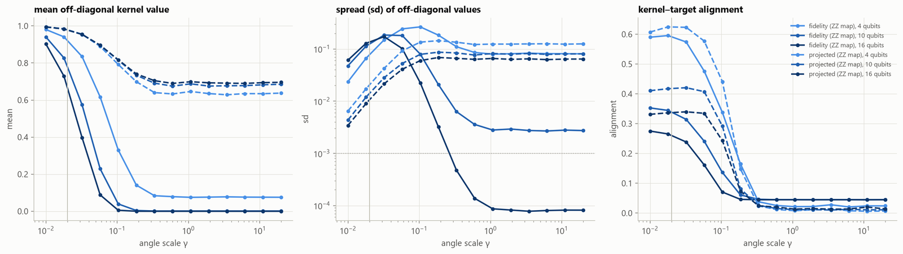
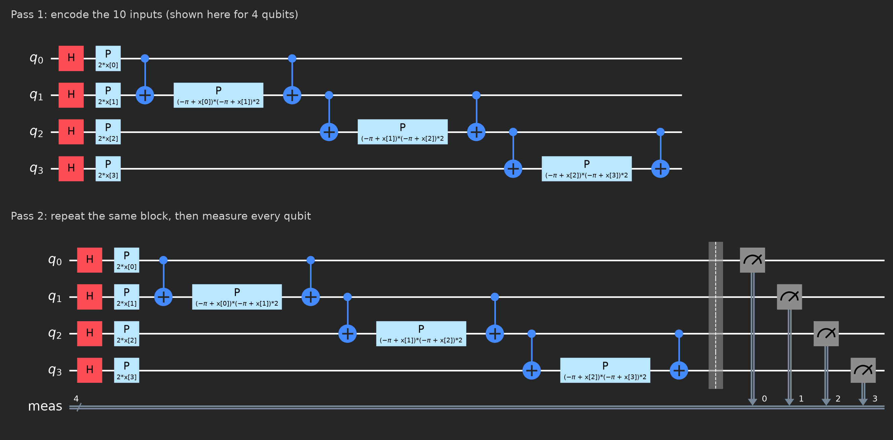
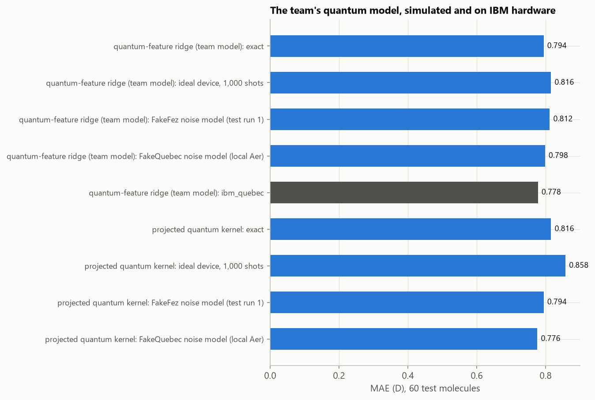

Qiskit Fall Fest 2026 - University of Ottawa - Team project - GitHub - Presentation
The hackathon prompt was "Learn molecular dipoles from fewer labels: how much reference data does a model need to predict molecular polarity?" Our team asked whether quantum machine learning models can match classical ones on this regression task under identical conditions. We built quantum regression models in Qiskit, compared each one with a classical counterpart given exactly the same inputs, data and tuning budget, and ran the most hardware-friendly one on a 156-qubit IBM quantum processor (ibm_quebec).
A molecule's dipole moment measures how far apart its centres of positive and negative charge sit. We used the QM9 dataset comprised of about 130000 small organic molecules whose dipoles were computed using density functional theory. Every one of those labels costs an expensive quantum chemistry calculation, so the question is how many a model needs to accurately predict the dipole moment, and whether quantum kernel methods, which are often proposed for small-data problems, need fewer.
The models are only allowed to see each molecule's atomic numbers and 3D coordinates, and must give the same answer when the molecule is rotated, moved, or has its atoms renumbered.
For our models, we chose to follow a hybrid quantum-classical approach using classical computing for analysis, feature selection and compression, and quantum computing for the feature map, which transforms each molecule's 10 compressed inputs into a high-dimensional quantum state; the regression itself is then fit classically on what is measured from those states.
The feature map is a parameterized circuit U(x) whose rotation angles are set by a molecule's 10 PLS inputs x, multiplied by a tuned angle scale γ. Acting on |0…0⟩, it prepares the state |ψ(x)⟩ = U(x)|0…0⟩, a unit vector in the 210 = 1,024-dimensional Hilbert space of the register. Our main encoding is Qiskit's ZZ feature map: Hadamard gates place every qubit in an equal superposition, single-qubit phase rotations write each input into the phase of its qubit, and CNOT–phase–CNOT blocks write the product of neighbouring inputs into their joint phase, which entangles them. The block is applied twice, and the circuit is drawn in the hardware section below.
The important idea is that the circuit is a nonlinear transformation of the inputs. A linear model trained on the 10 PLS inputs can only represent relationships that are linear in them. The amplitudes of |ψ(x)⟩, on the other hand, depend on the inputs through products of sines and cosines of each input and of neighbouring pairs, so a model built on the state can represent curvature and interactions that the raw inputs cannot express linearly. This is the quantum analogue of classical feature engineering (adding terms such as x2, xy or cos x) and of classical kernels such as the Gaussian kernel, which implicitly map the inputs into an infinite-dimensional space of smooth functions.
We read the state out in three ways, each is a tradeoff of how much of the state each one uses against how many circuits a device has to run.
Every one of these quantities has to be estimated by measurement, because a quantum state is never read out directly. Each execution ends in a measurement that returns a single bitstring, with probabilities given by the squared amplitudes, so overlaps and expectation values come from averaging many repeated executions (shots). The statistical error shrinks as 1/√shots, about ±0.016 on a probability at 1,000 shots. Most of the team's work used exact statevector simulation through Qiskit. Later we added finite-shot sampling, noise models built from IBM device calibrations, and one run on real hardware.
To isolate what the quantum transformation contributes, each quantum kernel is paired with kernel ridge regression using the Gaussian (RBF) kernel k(x, x′) = exp(−γ‖x − x′‖2) on the same 10 inputs, and the ⟨Z⟩-feature model with plain ridge regression on the untransformed inputs. These pairings pose a precise question: does the quantum transformation add anything beyond what a standard classical transformation of the same data already provides?
We employed a couple different measures in order to keep the comparison between quantum and classical models fair.
Every model was trained on N = 100, 300 and 1,000 molecules (three random training sets at each size, the same ones for every model) and scored on held-out test molecules: 5,484 whose chemical formula appears somewhere in the training data, and, in the last column, 16,818 whose formula never does. The numbers are the mean absolute error (MAE) of the predicted dipole in debye (D), averaged over the three training sets; lower is better. For scale, a typical molecule's dipole is about 2.5 D.
All the quantum models, and their classical twin, see the same 10 inputs: the 188 features compressed by partial least squares, one input per qubit.
| Model | What it does | N = 100 | N = 300 | N = 1,000 | N = 1,000, unseen chemical formulas |
|---|---|---|---|---|---|
| Quantum models (10 qubits) | |||||
| Quantum kernel ridge (main model) | Scores how similar two molecules are by the overlap of their quantum states (ZZ feature map), then fits kernel ridge regression. One circuit per pair of molecules. | 0.735 | 0.578 | 0.492 | 0.437 |
| No-entanglement control | The same model on a circuit with no entangling gates: a classical kernel written as a quantum circuit. | 0.732 | 0.578 | 0.490 | 0.433 |
| Projected quantum kernel | Compares molecules by each qubit's measured X, Y and Z values instead of the full state. Three circuits per molecule. | 0.724 | 0.578 | 0.493 | 0.440 |
| ⟨Z⟩-feature ridge | Fits a linear model on one Z measurement per qubit. One circuit per molecule, so the cheapest to run; this is the model we ran on IBM hardware. | 0.731 | 0.597 | 0.545 | 0.493 |
| Classical comparisons | |||||
| Classical twin | Standard kernel ridge regression with a Gaussian (RBF) kernel, on the same 10 inputs, training sets, folds and tuning budget as the quantum models. | 0.730 | 0.578 | 0.490 | 0.433 |
| Plain ridge (linear) | Ordinary linear ridge regression on the same 10 inputs, with no kernel and no circuit: the baseline for what nonlinearity adds, and the direct counterpart of the ⟨Z⟩-feature model. | 0.730 | 0.588 | 0.509 | 0.452 |
| Best classical model | The most accurate classical model at each size, free to use any inputs: XGBoost at 100, kernel ridge on all 188 features at 300, and a charge network at 1,000. | 0.653 | 0.550 | 0.280 | 0.276 |
| Predict the mean | Always predicts the average dipole of the training set: the baseline to beat. | 1.156 | 1.142 | 1.138 | 1.254 |
The bold rows are the comparison we are most interested in, the main quantum model against its classical twin. At 1,000 molecules the quantum model trails by just 0.001 D on familiar formulas and 0.004 D on new ones, while each model's score varies by about 0.01 D from one training set to another, so the two models perform similarly.
Comparing against the plain ridge regression shows where the gains come from. At 300 and 1,000 molecules every kernel model improves on it, quantum or classical, and by the same amount. At 1,000 molecules plain ridge scores 0.509 D, the quantum kernel 0.492 D and the classical RBF kernel 0.490 D. The no-entanglement control, a classical kernel written as a circuit, improves just as much, so the gain comes from the kernel's nonlinearity rather than from anything quantum. Passing the inputs through the circuit before a linear fit, as the ⟨Z⟩-feature model does, makes it slightly worse (0.545 D), and at 100 molecules no model does measurably better than plain ridge.
Additionally as data grows, the best classical model pulls far ahead. While not displayed in the table, our charge neural network reaches 0.040 D with all 99,198 training labels, 28× better than predicting the mean.
The decisive hyperparameter is the angle scale γ, which plays the role of a kernel bandwidth. At N = 1,000, grid search CV selected the smallest value in the grid for every training set, and that choice explains the tie.
At small angle scales the quantum kernel behaves classically. Every state stays close to the same reference state, so all fidelities are close to 1 and vary smoothly and approximately quadratically with the distance between inputs. This mirrors the behaviour of a wide Gaussian kernel. The fitted models confirm this as they use the same effective number of parameters (71.4 for the quantum kernel, 71.7 for the RBF kernel), and their kernel eigenspectra coincide, both dominated by the constant, linear and quadratic functions of the 10 inputs. In this regime the quantum kernel is effectively a classical, low-order polynomial smoother.
At large angle scales the opposite problem appears, known as exponential concentration. As γ grows, the states spread over the 1,024-dimensional Hilbert space and become nearly orthogonal. Off-diagonal fidelities collapse toward zero and their variance vanishes, exponentially fast in the number of qubits (Thanasilp et al., 2024). The kernel matrix approaches the identity, every molecule looks equally dissimilar to every other, and the model cannot generalize.
The quantum kernel is caught between a regime in which it generalizes but is classically reproducible and a regime in which it is "more quantum" but uninformative. This matches published studies of the same family of circuits: tuning the angle scale works like tuning a classical kernel's bandwidth (Shaydulin & Wild, 2022), and quantum kernels tuned to generalize become well approximated by classical kernels (Slattery et al., 2023). The entanglement control agrees, as we found that removing every entangling gate leaves the accuracy unchanged.

The fidelity kernel was too complex to run on IBM quantum hardware, requiring one circuit per pair of molecules or about 5×105
circuits just to train on 1,000 molecules. The ⟨Z⟩-feature model needs only one circuit per molecule, so it
was feasible to execute on the ibm_quebec QPU, using 10 of its qubits.

For each molecule, the circuit was bound to its 10 inputs and transpiled to the processor's native gate set and qubit connectivity. The transpiled circuit was 109 layers deep with 36 two-qubit gates. We executed the circuits for the 100 molecules of the training set and 60 test molecules (160 circuits at 1,000 shots each) and estimated every ⟨Zi⟩ from the measured bit frequencies, giving each molecule's 10 quantum features.
The ridge readout was then refit classically on the training molecules' feature map outputs with the angle scale and penalty selected by cross-validation in simulation, and evaluated on the device-measured features of the test molecules.
On ibm_quebec the model reached an MAE of 0.778 D, against 0.794 D in exact simulation of the same circuits and molecules, 0.816 D with simulated shot noise, and 0.81 D and 0.80 D under the FakeFez and FakeQuebec noise models. Errors are higher than in the results table because this run trained on only 100 molecules. With 60 test molecules each MAE carries an uncertainty of about ±0.1 D, so the hardware reproduced the simulation within sampling error rather than outperforming it.

ibm_quebec device (dark bar). The top five bars are the ⟨Z⟩-feature
model (labelled "quantum-feature ridge"); the lower bars are the projected kernel, which we ran in simulation only.
We placed second in the competition, while learning a considerable amount about quantum machine learning and quantum computing hardware, and a little about chemistry.
Python, Qiskit, Qiskit Aer, IBM Quantum, NumPy, SciPy, scikit-learn, XGBoost, pandas, Matplotlib, many more that I'm probably forgetting